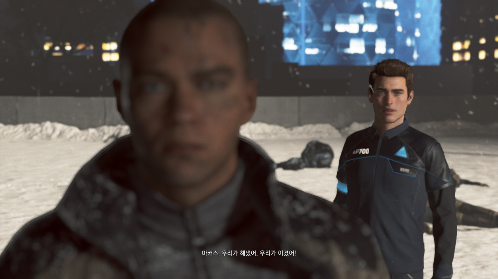

디트로이트 비컴 휴먼 9회차 플레이 후기
날짜: 2025.05.11 - 2025.05.18
플레이 중반 부터 슬슬 뽕 빠지는 느낌이 들었다. 어떤 관점으로 플레이해야 재밌게 할 수 있을까 고민이 많았는데-
개뿔.
기승전결의 전 들어가면서 다시 과몰입해서 플레이함. 재밌네...
캡처 욕심 좀 줄이고 중반만 버티면 여전히 재밌다. 생각해보면 똑같은 장면을 9번째 하는 건데 안 질리는게 이상하긴 하지.
순서도 다 찍고 베스트씬 녹화도 다 하면, 공략 등을 정리해도 좋겠다.
오늘도 갓 칼할아버지로 시작하는 9회차
현금을 소지하고 다니는 안드로이드라니 제법 웃겨요
볼 때마다 웃긴 장면ㅋㅋㅋ 나 같아도 어이없긴 할듯... 심문하라고 들여보냈더니 거울보고 있잖아.

메모리 스캔을 하는게 그 당시를 재현하는 거라 카를로스의 안드로이드도 이렇게까지 싫어하는듯...
메모리를 스캔하면 카를로스에게 야구방망이로 맞는 순간 거울 너머로 코너도 되게 크게 동요한다.
이런 동요하는 장면은 사이먼 때만 있다고 생각했는데 아니었다.
즐라트코집을 알려주는 안드로이드를 관찰해보면, 저 쓰레기통만 무한으로 비우고 있다ㅋㅋㅋ
이거 되게 큰 떡밥을 남긴 거 같은데 괜찮은 건가... 내가 다 알고 이 선택지를 골라서 그렇게 생각하는 거일 수도 있다.
맨 처음에 선택했다면 그렇게 어린 아이는 아니라는 뜻으로 읽혔을지도.

이게 사람과 안드로이드의 차이다...
비 와서 눈 찌푸린 행크와 눈을 깜빡이지도 않는 코너...
저도 그렇게 생각합니다 행크...
카를로스의 집에서 rA9를 보지 않으면 거기서 이 기호를 봤다는 멘트만 삭제된다.
불량품 전환 접촉만 하면 되는 건 알겠는데 이 상태로도 되는 거구나...ㅋㅋㅋㅋㅋ

이거 시간 안에 다른 답도 얻을 수 있나 최대한 빨리 해봤는데 이 사이에 시간이 이렇게 확 건너뛴다ㅋㅋㅋ 답정 루트였어ㅠㅜ
아니 겁나 겁주셨어요,,,

회전목마 탄 앨리스 볼 때 내 표정 딱 제리 표정이다... 애기 행복해ㅠㅠㅠ
뭐 눌러서 이런 멘트가 나왔는지 기억이 안 나네... 내가 캐해석하는 코너의 멘트에 가장 가까운 대답이다.
의외로 연필은 아직 쓰고 있나봐.
아만다 신뢰도를 불신까지 떨어뜨려도 스토리에 변화는 없다.
마커스의 연설을 보며 안드로이드인 너는 무슨 생각을 하고 있니
갠적으로 이 모델이 코너 다음으로 잘생겼다 생각중.

이런 멘트 덕분(?)에 마커스를 플레이할 때는 더더욱 폭력 쪽으로 못 가겠다.
이 사람 어떤 선택지를 해도 너무 빨리 포기하는게 뭔가 웃김...ㅋㅋㅋㅋ
행크가 퍼킨스 죠오질 때 구경만 하는 제프리...ㅋㅋㅋㅋㅋ 좀 말려유 슨생님
연기력이 주옥같구나 불량품 사냥꾼...
문을 열어도 문 열어달라던 안드로이드는 들어오면서 총에 맞아 결국 죽는다...
안드로이드 해방 말고 또 어떤 꿈을 꾸었니 마커스... 칼 할아버지와의 행복이면 나 운다.

자기 인식하고 문 그대로 열리는 거 보니까 마커스 표정봐..ㅠ..
요 장면도 조금 아쉽다. 또 올게요 같은 멘트 하나라도 치고 떠났음 좋았을 텐데... 물론 이래놓고 못 오는게 더 슬프지만.
LED가 빨간 애도 있고 아닌 애도 있다는 건 불량품인 안드로이드도 있고 아닌 안드로이드도 있다는 거겠지.
하 이 쪼꼬만 애를 어떻게 폐기해ㅠㅠㅠ
진짜 가차없다... 그래 인간들 눈엔 그냥 기계일 뿐이겠지....
혁명을 이끄는 마커스는 멋있지만 슬프다...
제리들 해맑은 거 왤케 웃기냐ㅠㅠㅠㅠ 웃어줘서 고맙지만 넘 슬프잖아ㅠㅠㅠㅠ
하 이번에 수류탄 루트 연구하느라 어버버 거리다가 마커스가 크게 다쳤다.
노스가 동료 이상이면 마커스에게 심장을 주는 모양인데 동료일 때 멘트가 연인 루트 때랑 똑같다ㅋㅋㅋㅋ 이게 어떻게 동료야 연인이지!!!
코너가 앞서 여러 번 죽으면 여기서도 콜 관련 멘트를 하는구나. 처음 봤다.
미안한 소리지만 너가 시선 끌어줄 때 가장 죄책감이 덜하다 야...ㅠ

마커스가 혁명에 성공하고 주변에 지도자들이 아무도 없으면 저 안드로이드가 멘트를 친다.
마커스의 저 멘트는 매번 암울하지만... 이거 핑계로 디비휴2나 DLC 내주면 안 되나...^^...
마커스가 혁명+성공 루트면 카라의 수용소 루트는 무조건 이걸로 고정이더라.
철장 루트 이런 거 궁금하긴 한데 나중에나 볼 수 있을듯...
'수천 대'라는 단어만 보면 많구나... 싶은데, 사진으로 보니까ㅋㅋㅋ 나 같아도 무서울 거 같긴 해...
봐도봐도 안 질리고 너무 좋아하는 에필로그... 안드로이드는 싫다던 행크가 먼저 다가가는 거 봐ㅠㅠㅠ